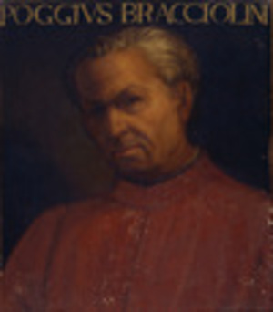

Poggio Bracciolini, conosciuto anche come Poggius Florentinus è vissuto dal 1380 fino al 1459. Conosciuto per essere un noto Umanista e storico italiano, ha rimesso in circolazione vari scritti, tra cui "De Rerum Natura" e "Istituto Oratoria". Figlio di Guccio e Jacoba Frutti si trasferì in gioventù a Bologna per compiere studi giuridici ma a causa di una crisi economica in famiglia è stato costretto a ritornare in Toscana. Nel mentre si intrattenne come copista. In seguito dopo aver preso Salutati come mentore inizia a sviluppare studi di greco e latino, qui comincia il suo viaggio verso l'umanesimo. Dopo vari viaggi, tra Germania e Francia, cominciò a lavorare come segretario personale del pontefice nella Curia di Papa Marivo V. Ebbe 6 figli con Vaggia Buondelmonti e altri con l'amante Lucia Panelli, di cui 4 maschi intrapresero la carriera ecclesiastica. Morì il 30 ottobre del 1459, a distanza di pochi mesi dalla moglie, fù sepolto nella Basilica di Santa Croce insieme ad alcuni suoi conoscenti